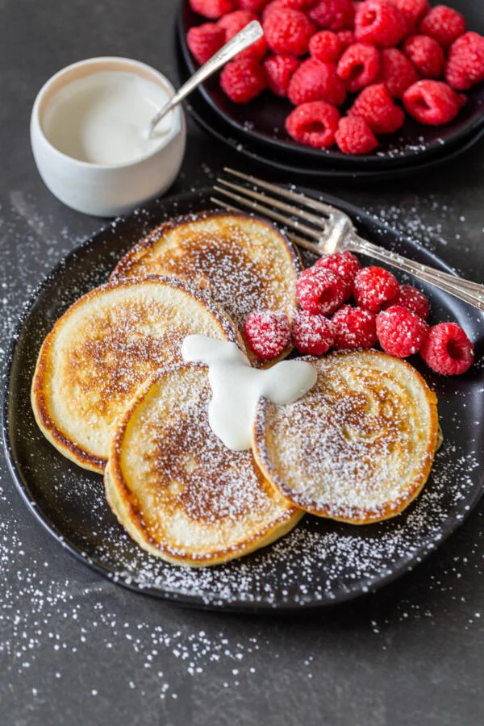

Small, but packed with flavor, the batter for these famous Russian pancakes differs from those for traditional pancakes as it is prepared with kefir, a fermented milk product with a slightly sour taste. They are pan-fried into small rounds, similar to American-style pancakes. The pancakes turn golden brown when finished, and they are chewy with crunchy edges.
Meal prep time : 20 minutes
Servings : 4